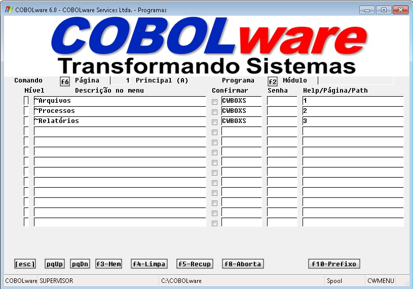
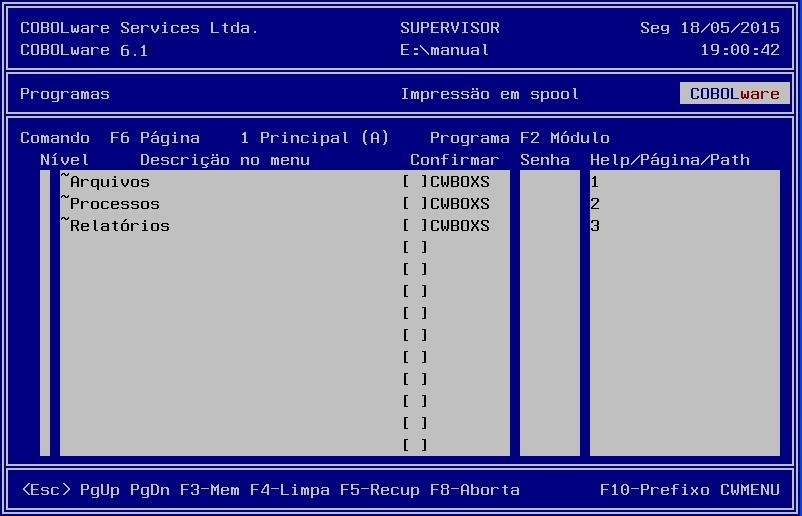
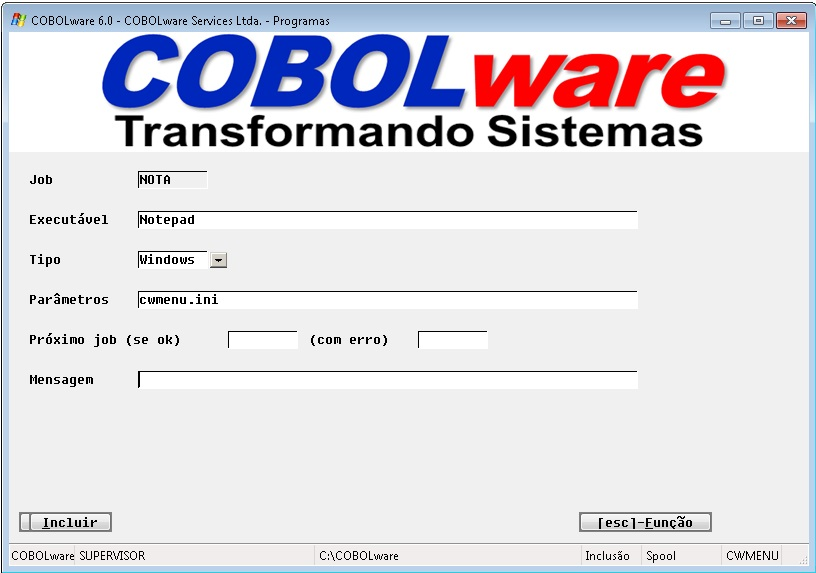
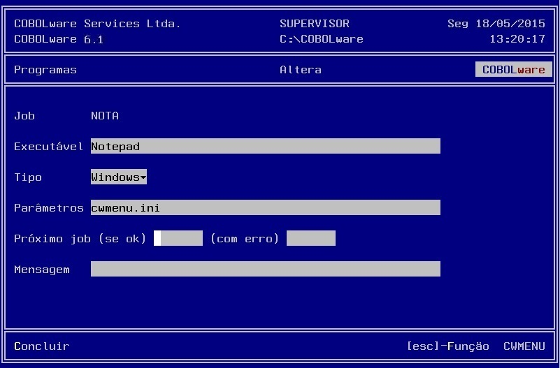

Manutenção das tabelas de programas.
Os menus são produzidos dinamicamente a partir de 2 tabelas de programas: a de menu principal e a de menu secundário. Os atributos das duas tabelas são idênticos, apenas o que difere uma da outra é a hierarquia do menu, ou seja o gerenciador abre inicialmente o menu principal e a partir daí é possível navegar em até 5 níveis de menus.
Tipos de manutenção:
Exportar/Importar
A
tabela de programas pode ser transferida para a configuração
de outra instalação sem afetar os demais componentes de
configuração
Menu Principal/Menu secundário
|
Modo gráfico |
|
 |
|
Modo texto |
|
 |
Comando
A opção
F10-Prefixo dá acesso a uma coluna de comandos de edição
de linhas que permitem:
|
A |
Insere abaixo. |
|
C |
Copia. |
|
D |
Deleta. |
|
M |
Move. |
|
F |
Indica a linha abaixo como destino para copiar ou mover. |
|
P |
Indica a linha acima como destino para copiar ou mover. |
|
" |
Duplica. |
Com F9-Cmd o comando é efetivado.
Nível
Estabelece o nível que o usuário deve ter para ter acesso ao programa.
F6 Página
Permite o
acesso direto a uma determinada página de menu. Os menus são
agrupados por páginas de até 26 opções
cada.
Descrição no menu
Texto de até 34 caracteres que identifica a finalidade da opção.
Programa
Nome
de programa COBOL ou Job (indicado por /) a ser executado na escolha
da opção ou função de navegação
de menu:
CWBOXS Abre um menu secundário definido em outra
página. O número desta pagina deve ser declarado na
coluna Help/Pagina/Path.
CWMENU
navega para outro sistema cuja configuração está
localizada na pasta ou arquivo declarada na coluna Help/Pagina/Path.
Confirmar
Habilita a
solicitação de confirmação de execução.
O usuário terá de confirmar se realmente deseja
executar a opção
Senha
Estabelece
uma senha específica para acesso à opção.
Se a coluna Programa contiver um nome de programa COBOL ou job, esta coluna pode conter o nome de um arquivo texto que será tratado como help da opção ou parâmetros. Para a função de navegação CWBOXS deve ser indicado o número da página de menu de destino. Para a função CWMENU deve ser declarado um nome de pasta que contenha arquivo de configuração cwconf de outro sistema ou diretamente $arquivo (nome alternativo ao cwconf).
F2 Módulo
Identifica a
qual módulo a página está associada. Desta
forma, um mesmo programa pode ser declarado em várias páginas
mas ter diferenças de tratamento de acordo com o módulo
em que está sendo executado. Esta informação
pode ser obtida com o comando GetSystem.
PgUp/PgDn
Navega
sequencialmente entre páginas e folhas. Cada página
contém duas folhas identificadas como A e B.
F3-Mem
Copia
todo o conteúdo da página corrente para a memória
de trabalho.
F4-Limpa
Apaga
o conteúdo da folha corrente.
F5-Recup
Cola
a memória de trabalho para a página
corrente.
F8-Aborta
Desfaz
todas as alterações da página
corrente.
F10-Prefixo/Texto
Permuta
o acesso à coluna de comandos ou de volta à área
de texto.
Definição de jobs
|
Modo gráfico |
|
 |
|
Modo texto |
|
 |
Job
Identificação.
Na tabela de programas, na coluna Programa,
deve ser marcado com "/" para diferenciar de nome de
programa, no exemplo: /NOTA.
Executável
Nome
do programa COBOL ou de comando reconhecível pelo sistema
operacional.
Tipo
Tipo de
executável, Binário, COBOL ou
Windows.
Parâmetros
Parâmetros
a serem passados para o executável pela linha de comando ou
pela linkage section no caso de tipo COBOL.
Próximo
job (se ok)
Identificação de job a ser
executado em sequência caso o job corrente seja executado com
sucesso.
(com erro)
Identificação
de job a ser executado em sequência caso o job corrente tenha
falhado na execução.
Mensagem
Texto informativo a ser exibido na tela no momento da execução.